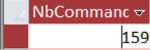
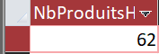

Nos propositions pour KDou
Nos requêtes personnelles pour aider KDou à améliorer son fonctionnement.
Sujet de la SAE sur laquelle nous avons travaillé :
SAE2026Présentation de nos propositions
Pour cette dernière étape de la SAE, chaque membre du groupe devait proposer une requête personnelle utile à KDou. Nous avons étudié les livraisons écologiques, l'approvisionnement français et la provenance des produits hors de l'Union européenne.
1 - Les livraisons écologiques à Paris
Proposition de Marc
Objectif
Dans notre SAE d'économie, nous avions proposé à KDou de collaborer avec des transporteurs écologiques, notamment en utilisant des vélos-cargos pour les livraisons dans Paris.
Pour cette requête personnelle, j'ai donc décidé de chercher le nombre de commandes passées par les clients parisiens. L'objectif est d'estimer si cette solution de livraison pourrait être intéressante.
Notre démarche
On utilise les tables Clientele et Commande, reliées grâce au champ CodeCli. On filtre ensuite les clients dont la ville est Paris, puis COUNT permet de compter les commandes correspondantes.
Requête SQL
SELECT
COUNT(Commande.[N° commande]) AS NbCommandesParis
FROM
Clientele
INNER JOIN Commande
ON Clientele.CodeCli = Commande.CodeCli
WHERE
Clientele.Ville = "Paris";Résultat obtenu

159 commandes
Après avoir exécuté la requête, on obtient 159 commandes passées par des clients situés à Paris.
Notre proposition
Une partie des commandes de KDou pourrait être livrée avec des vélos-cargos. On pourrait tester ce système à Paris pour vérifier son fonctionnement, avant de l'utiliser dans d'autres villes.
2 - Les produits des fournisseurs français
Proposition de Maxim
Objectif
Maxim a décidé de rechercher les produits du catalogue fournis par des entreprises situées en France. Il souhaite identifier les approvisionnements français pour envisager de réduire les distances de transport.
Notre démarche
On relie les tables Fournisseur et Produit grâce à NoFour. La condition NoPays = 9 sélectionne les fournisseurs français, puis ORDER BY trie les produits par ordre alphabétique.
Requête SQL
SELECT
Produit.NomProd,
Fournisseur.Societe,
Fournisseur.NoPays
FROM
Fournisseur
INNER JOIN Produit
ON Fournisseur.NoFour = Produit.NoFour
WHERE
Fournisseur.NoPays = 9
ORDER BY
Produit.NomProd;Résultat obtenu
La requête affiche les produits du catalogue provenant de fournisseurs français et le nom de leur société. Le rapport de Maxim ne comporte pas de capture de ce résultat.
Notre proposition
KDou pourrait étudier la possibilité de privilégier certains fournisseurs proches, lorsque cela est pertinent, afin de réduire l'impact environnemental de ses transports.
3 - Combien de produits proviennent de pays hors UE ?
Proposition de Killian
Objectif
Killian a cherché à connaître le nombre de produits proposés par KDou dont les fournisseurs se trouvent dans un pays hors de l'Union européenne. Cet indicateur permet d'évaluer la part du catalogue liée à ces approvisionnements.
Notre démarche
Il relie Produit, Fournisseur et Pays pour retrouver le pays de chaque fournisseur, puis utilise la condition UE = "Hors" et COUNT pour compter les produits concernés.
Requête SQL
SELECT COUNT(P.RefProd) AS NbProduitsHorsUE
FROM (Produit AS P
INNER JOIN Fournisseur AS F ON P.NoFour = F.NoFour)
INNER JOIN Pays AS Pa ON F.NoPays = Pa.NoPays
WHERE Pa.UE = "Hors";Résultat obtenu

62 produits
Notre proposition
Ce résultat pourrait aider KDou à examiner sa dépendance aux approvisionnements hors UE et à étudier, quand cela est possible, des alternatives plus proches afin de limiter certains transports.
Conclusion
Nos trois propositions portent sur différents aspects des transports et de l'approvisionnement : les commandes parisiennes, les fournisseurs français et les produits provenant de pays hors UE. Elles peuvent aider KDou à identifier des pistes d'amélioration, mais d'autres informations seraient nécessaires pour vérifier leur rentabilité et leur impact environnemental.
Nos rapports individuels
Retrouvez les rapports complets de notre groupe avec nos requêtes et nos explications.